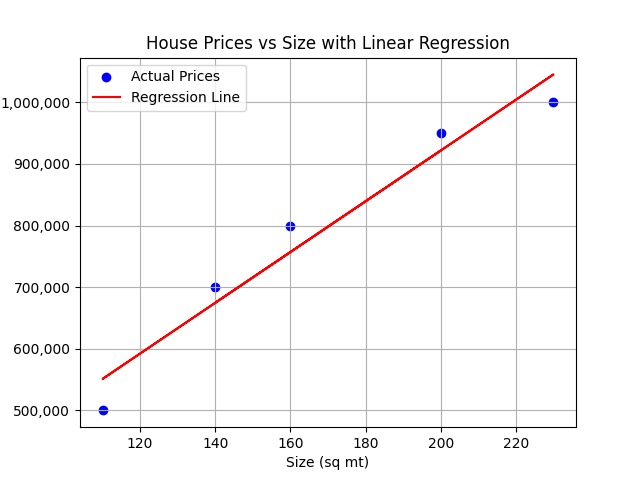
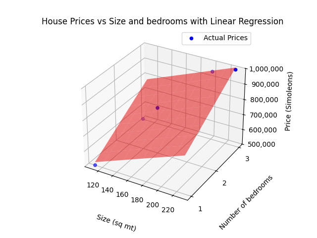

¿Cómo nos entienden las máquinas? Introducción al PLN o NLP(Procesamiento de lenguaje natural)
Una introducción sencilla al aprendizaje automático
Publicado el 21 de marzo de 2025

Imagen creada por ChatGPT, OpenAI. 12 de Noviembre de 2024
1. ¿Qué es el Machine Learning o Aprendizaje automático?
El aprendizaje automático es un campo de la informática que permite a las computadoras aprender y adaptarse en función de los datos, sin necesidad de una programación explícita para cada tarea específica. Como lo define Oxford Languages, el aprendizaje automático es “el uso y desarrollo de sistemas informáticos capaces de aprender y adaptarse sin seguir instrucciones explícitas, mediante el uso de algoritmos y modelos estadísticos para analizar y extraer inferencias de patrones en los datos”.
Un tipo de aprendizaje automático es una red neuronal. Pero antes de sumergirnos en las redes neuronales, echemos un vistazo a un ejemplo más simple de aprendizaje automático para construir una base sólida: predecir los precios de las viviendas.
Un ejemplo del mundo real: predicción de precios de viviendas
Supongamos que desea predecir el precio de una casa en función de algunas características, como la cantidad de habitaciones, el tamaño de la casa, la ubicación y el año de construcción.
Primero, reuniría un conjunto de datos de casas cuyos precios ya conoce. Estos datos se pueden representar en una tabla, donde cada fila es un registro de una casa con columnas para diferentes características (conocidas como características o predictores) como el tamaño, las habitaciones, la ubicación y el año de construcción. La columna que contiene el precio es nuestra variable objetivo o dependiente: es el valor que estamos tratando de predecir.
| Tamaño (sq mt) | Habitaciones | Codigo Postal | Año de construcción | Precio (Simoleons) |
|---|---|---|---|---|
| 1500 | 3 | 94121 | 2005 | §700,000 |
| 2500 | 4 | 94122 | 2010 | §1,000,000 |
| 1200 | 2 | 94123 | 1998 | §500,000 |
Usaremos estos datos para entrenar nuestro modelo.
Regresión lineal: un modelo simple para la predicción
Para hacer esta predicción, podemos comenzar con un modelo simple llamado regresión lineal. En esencia, la regresión lineal busca una relación de línea recta entre las características y el objetivo.
Imagina que cada fila de datos es un punto en un espacio dimensional. Por ejemplo, si solo usamos el tamaño de la característica, podríamos trazar los puntos de datos en un espacio 2D, donde el eje x representa el tamaño y el eje y representa el precio.
En este escenario, la regresión lineal ajustaría una línea a los datos que mejor expliquen la relación entre el tamaño de la casa y el precio.

Precios de casas ficticios versus tamaño de la casa
En este escenario, la regresión lineal ajustaría una línea a los datos que mejor expliquen la relación entre las características de la casa y el precio.
Ahora, agreguemos complejidad. Imaginemos que usamos dos características en lugar de una, por ejemplo, el tamaño y la cantidad de habitaciones. Ahora, nuestros puntos de datos se distribuirían en un espacio 3D: el eje x podría representar el tamaño, el eje y podría representar las habitaciones y el eje z sería el precio de la casa. Aquí, en lugar de una línea, la regresión ajustaría un plano a los datos.

Precios de casas ficticios versus tamaño de la casa y cantidad de habitaciones
A medida que agregamos aún más características, es difícil de visualizar. En un ejemplo con n características, cada registro se convertiría en un punto en un espacio (n+1)-dimensional. En este caso, nuestro modelo de regresión se ajusta a un hiperplano (el término que se utiliza cuando nos movemos más allá de las tres dimensiones) que mejor representa los puntos de datos.
Una vez que se crea este hiperplano, podemos usarlo para predecir valores desconocidos. Cuando creamos este hiperplano, estamos entrenando el modelo. Para evaluar nuestro modelo, podríamos conservar parte de los datos para realizar pruebas, ingresar nuevos valores de características y ver qué tan cerca está el precio predicho del precio real.
Encontrar la línea, el plano o el hiperplano que mejor se ajusta: la fórmula
En la regresión lineal, la fórmula para el modelo es:
Precio = β₀ + β₁ * Característica_1 + β₂ * Característica_2 + ... + βₙ * Característica_n
Cada característica tiene un coeficiente , que refleja cuánto impacto tiene en el objetivo. β₀ es la intersección, o precio base, cuando todas las características son cero.
En nuestro ejemplo del precio de la vivienda, esto podría verse así:
Precio = β₀ + β₁(Tamaño) + β₂(Habitaciones) + β₃*(Ubicación) + β₄*(Año de construcción)
Nuestro objetivo es encontrar valores para estos coeficientes que se ajusten mejor a los datos. Hay diferentes formas de calcular estos valores; veremos brevemente dos de ellas: Mínimos cuadrados y Descenso de gradiente.
Método 1: Mínimos cuadrados
El método de Mínimos cuadrados nos brinda una solución exacta al resolver ecuaciones matemáticas basadas en los datos. En los casos con una sola característica, es bastante eficiente, ya que solo necesita revisar cada punto de datos una vez. Pero cuando tiene múltiples características, requiere cálculos más complejos (operaciones matriciales), que pueden volverse poco prácticas para conjuntos de datos grandes.
Método 2: Descenso de gradiente
El descenso de gradiente es un método iterativo y suele preferirse cuando se trabaja con múltiples características o grandes conjuntos de datos. Aquí hay una versión simplificada de los pasos:
1. Comience con una suposición: comience con una línea aleatoria que no se ajuste bien a los datos. Esta línea tiene una pendiente y una intersección (posición).
2. Verifique qué tan lejos está: para cada casa en el conjunto de datos, mida qué tan lejos está el precio predicho del precio real.
3. Ajuste la línea: ajuste la línea levemente en función de qué tan lejos estaba. Si las predicciones de la línea fueron demasiado altas, ajústelas hacia abajo; si son demasiado bajas, ajústelas hacia arriba. De manera similar, modifique la pendiente si es demasiado pronunciada o demasiado plana.
4. Repita: continúe ajustando la línea poco a poco. Cada ajuste hace que la línea se ajuste a los datos con mayor precisión.
5. Deténgase cuando esté lo suficientemente cerca: cuando la línea se ajuste a los datos lo suficientemente bien, dejamos de ajustar.
¿Por qué funciona esto? Piense en ello como si estuviera apuntando un dardo a un objetivo. Cada lanzamiento (o ajuste) le ayuda a acercarse y, con el tiempo, “aprende” a dar cerca del centro de la diana.
Así que ahí lo tiene: un ejemplo del mundo real de uso del aprendizaje automático y la regresión lineal para predecir valores basados en datos. Hay muchos más métodos para hacer predicciones con aprendizaje automático. Recomiendo visitar el sitio web de scikit-learn para profundizar su comprensión de estos métodos. Con esta base, ahora tiene una idea básica de cómo funciona el aprendizaje automático y está listo para comenzar a explorar este fascinante campo con más profundidad.